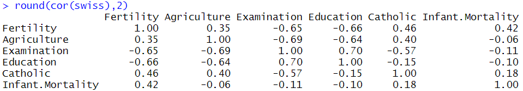

ADsP 문제 풀이 5일차
4,5일 전체 복습
11회 기출문제
1. 표본조사나 실험을 하는 과정에서 추출된 원소나 관측 자료를 얻는 것을 측정이라고 한다. 다음 중 자료의 측정 수준에 대한 설명으로 부적절한 것은?
명목척도는 단순한 번호로 차례의 의미는 없고 분류할 때 사용한다.
순서척도는 순서가 의미를 가지는 번호이며 서열관계를 관측하는 측도이다.
비율척도는 0을 기준으로 하는 절대적 척도로 사칙 연산이 가능하며 제일 많은 정보를 가진다.
구간척도는 순서뿐만 아니라 그 간격도 의미가 있으며, 두 관측값 사이의 비울이 큰 의미를 가진다.
11회 기출문제
2. 아래는 스위스의 47개의 프랑스어 사용지역의 출산율(Fertility)과 관련된 변수들을 사용하여 얻은 결과이다. 다음 설명 중 부적절한 것은?

Fertility와 가장 높은 상관관계를 갖는 변수는 Education이다.
서로 다른 두 개의 변수 간의 가장 큰 상관계수 값은 1이다.
Agriculture와 Examination은 음의 상관관계를 가지고 있다.
서로 다른 두개의 변수 간의 양의 상관관계가 가장 강한 변수들은 Education과 Examination이다.
11회 기출문제
3. 다음 가설 검정 용어 중 '귀무가설이 옳은데도 이를 기각하는 확률의 크기'는 어느 용어인가?
제 2종 오류
검정통계량
기각역
유의수준
13회 기출문제
4. 자료의 정보를 이용해 집단에 관한 추측, 결론을 이끌어내는 과정인 통계적 추론에 대한 설명으로 가장 부적절한 것은?
전수조사가 불가능하면 모집단에서 표본을 추출하고 표본을 근거로 확률론을 활용하여 모집단의 모수들에 대해 추론하는 것을 추정이라 한다.
점 추정은 표본의 정보로부터 모집단의 모수를 하나로 추정하는 것이다.
통계적 추론은 제한된 표본을 바탕으로 모집단에 대한 일반적인 결론을 유도하려는 시도이므로 본질적으로 불확실성을 수반한다.
구간추정은 모수의 참값이 포함되어 있다고 추정되는 구간을 결정하는 것이며, 실제 모집단의 모수는 신뢰구간에 포함되어야 한다.
13회 기출문제
5. 다음 중 가설검정과 관련된 용어에 대한 설명으로 가장 부적절한 것은?
현재까지 주장되어 온 것이거나 변화나 차이가 없음을 설명하는 가설을 귀무가설이라 한다.
대립가설이 맞는데도 귀무가설이 맞다고 결론 내리는 오류의 확률을 검정력이라고 한다.
귀무가설을 기각시키는 검정통계량들의 범위를 기각역이라한다.
귀무가설이 맞다고 정할 때 통계량보다 극단적인 결과가 실제로 관측될 확률을 유의확률 p-value라고 한다.
13회 기출문제
6. 다음 중 중심극한정리에 대한 설명으로 가장 부적절한 것은?
여러 통계적 방법론에는 정규데이터가 필요하지만 중심극한 정리를 사용하면 비정규적인 모집단에도 이와 유사한 절차를 적용할 수 있다.
표본평균의 분포는 표본의 크기가 커짐에 따라 정규분포로 근사한다.
모집단의 분포가 정규분포에 가까워져야 표본평균의 분포가 정규분포로 근사하게 된다.
모집단의 분포가 대칭이면 표본의 크기가 작아도 되지만 모집단의 분포가 비대칭이면 표본의 크기가 30이상이 되어야 한다.
제출하기